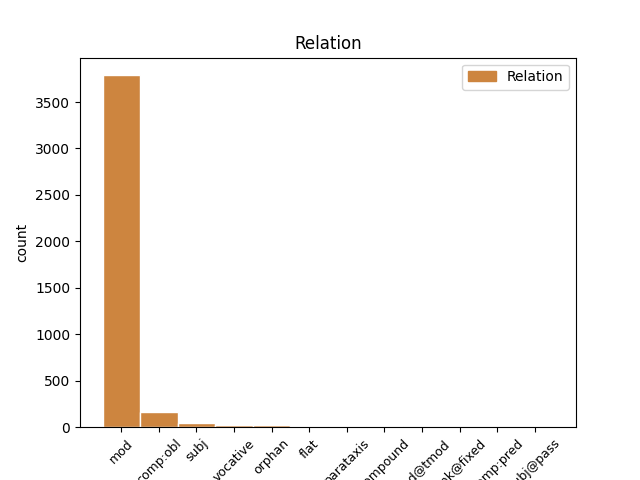
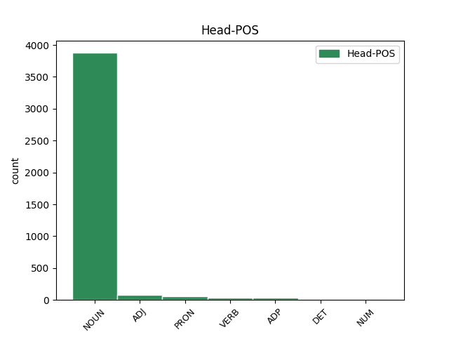
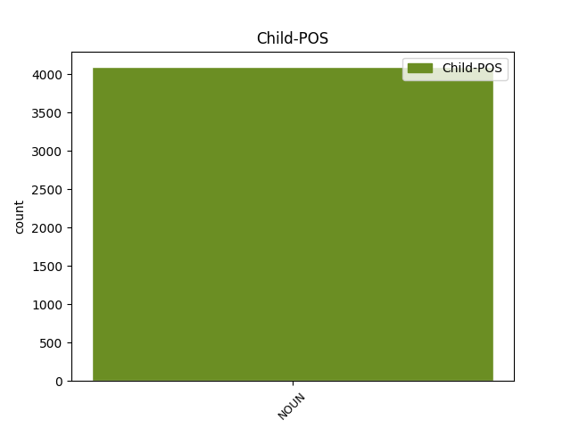

Distribution of features within this leaf



Agreement Rules sorted by frequency.
- When the dependent token is the modifer(mod) of the head token, and the head token is NOUN and the dependent token is NOUN.
1 Prin _ _ _ _ 0 _ _ _
2 obștească _ _ _ _ 0 _ _ _
3 chibzuire _ _ _ _ 0 _ _ _
4 ce _ _ _ _ 0 _ _ _
5 s _ _ _ _ 0 _ _ _
6 -au _ _ _ _ 0 _ _ _
7 făcut _ _ _ _ 0 _ _ _
8 în _ _ _ _ 0 _ _ _
9 scris _ _ _ _ 0 _ _ _
10 prin _ _ _ _ 0 _ _ _
11 Anafora _ _ _ _ 0 _ _ _
12 de _ _ _ _ 0 _ _ _
13 sfinția _ _ _ _ 0 _ _ _
14 lor _ _ _ _ 0 _ _ _
15 Părinți _ _ _ _ 0 _ _ _
16 Arhierei _ _ _ _ 0 _ _ _
17 și _ _ _ _ 0 _ _ _
18 de _ _ _ _ 0 _ _ _
19 Dumnealor _ _ _ _ 0 _ _ _
20 cinstiții _ _ _ _ 0 _ _ _
21 și _ _ _ _ 0 _ _ _
22 credincioșii _ _ _ _ 0 _ _ _
23 Boerii _ _ _ _ 0 _ _ _
24 Veliți _ _ _ _ 0 _ _ _
25 ai _ _ _ _ 0 _ _ _
26 divanului divan NOUN Ncmsoy Case=Dat,Gen|Definite=Def|Gender=Masc|Number=Sing 0 _ _ _
27 Domnii domnie NOUN Ncfsoy Case=Dat,Gen|Definite=Def|Gender=Fem|Number=Sing 26 mod _ ref=COMPLETARE.9
28 meale _ _ _ _ 0 _ _ _
29 , _ _ _ _ 0 _ _ _
30 Halea _ _ _ _ 0 _ _ _
31 și _ _ _ _ 0 _ _ _
32 mazilii _ _ _ _ 0 _ _ _
33 . _ _ _ _ 0 _ _ _
1 Într- _ _ _ _ 0 _ _ _
2 acestași _ _ _ _ 0 _ _ _
3 chip _ _ _ _ 0 _ _ _
4 și _ _ _ _ 0 _ _ _
5 la _ _ _ _ 0 _ _ _
6 Craiova _ _ _ _ 0 _ _ _
7 să _ _ _ _ 0 _ _ _
8 să _ _ _ _ 0 _ _ _
9 urmeaze _ _ _ _ 0 _ _ _
10 de _ _ _ _ 0 _ _ _
11 cătră _ _ _ _ 0 _ _ _
12 Dumnialui dumnealui PRON Pp3msr Case=Acc,Nom|Gender=Masc|Number=Sing|Person=3|PronType=Prs 0 _ _ _
13 Caimacanul caimacan NOUN Ncmsry Case=Acc,Nom|Definite=Def|Gender=Masc|Number=Sing 12 mod _ ref=PART_V_CAP_3.15e|SpaceAfter=No
14 . _ _ _ _ 0 _ _ _
1 L- _ _ _ _ 0 _ _ _
2 am _ _ _ _ 0 _ _ _
3 văzut _ _ _ _ 0 _ _ _
4 la _ _ _ _ 0 _ _ _
5 crâșma _ _ _ _ 0 _ _ _
6 Stanii _ _ _ _ 0 _ _ _
7 , _ _ _ _ 0 _ _ _
8 Unde _ _ _ _ 0 _ _ _
9 beau _ _ _ _ 0 _ _ _
10 drumeții _ _ _ _ 0 _ _ _
11 banii _ _ _ _ 0 _ _ _
12 Și _ _ _ _ 0 _ _ _
13 voinicii voinic NOUN Ncmpry Case=Acc,Nom|Definite=Def|Gender=Masc|Number=Plur 0 _ _ _
14 gologanii gologan NOUN Ncmpry Case=Acc,Nom|Definite=Def|Gender=Masc|Number=Plur 13 orphan _ SpaceAfter=No
15 . _ _ _ _ 0 _ _ _
1 Zestre _ _ _ _ 0 _ _ _
2 să _ _ _ _ 0 _ _ _
3 zice _ _ _ _ 0 _ _ _
4 averea _ _ _ _ 0 _ _ _
5 fămei _ _ _ _ 0 _ _ _
6 , _ _ _ _ 0 _ _ _
7 ce _ _ _ _ 0 _ _ _
8 la _ _ _ _ 0 _ _ _
9 căsătorie _ _ _ _ 0 _ _ _
10 dă _ _ _ _ 0 _ _ _
11 bărbatului _ _ _ _ 0 _ _ _
12 ei _ _ _ _ 0 _ _ _
13 , _ _ _ _ 0 _ _ _
14 cu _ _ _ _ 0 _ _ _
15 tocmeală _ _ _ _ 0 _ _ _
16 , _ _ _ _ 0 _ _ _
17 ca _ _ _ _ 0 _ _ _
18 ea _ _ _ _ 0 _ _ _
19 să _ _ _ _ 0 _ _ _
20 fie _ _ _ _ 0 _ _ _
21 Stăpînă stăpână NOUN Ncfsrn Case=Acc,Nom|Definite=Ind|Gender=Fem|Number=Sing 0 _ _ _
22 zestrii zestre NOUN Ncfprn Case=Acc,Nom|Definite=Ind|Gender=Fem|Number=Plur 21 comp:obl _ ref=PART_III_CAP_16b.9
23 totdeauna _ _ _ _ 0 _ _ _
24 , _ _ _ _ 0 _ _ _
25 iară _ _ _ _ 0 _ _ _
26 el _ _ _ _ 0 _ _ _
27 să _ _ _ _ 0 _ _ _
28 -i _ _ _ _ 0 _ _ _
29 ia _ _ _ _ 0 _ _ _
30 venitul _ _ _ _ 0 _ _ _
31 totdeauna _ _ _ _ 0 _ _ _
32 . _ _ _ _ 0 _ _ _
1 Bună _ _ _ _ 0 _ _ _
2 ziua zi NOUN Ncfsry Case=Acc,Nom|Definite=Def|Gender=Fem|Number=Sing 0 _ _ _
3 , _ _ _ _ 0 _ _ _
4 doftor doctor NOUN Ncmsrn Case=Acc,Nom|Definite=Ind|Gender=Masc|Number=Sing 2 vocative _ _
5 mare _ _ _ _ 0 _ _ _
6 , _ _ _ _ 0 _ _ _
7 N- _ _ _ _ 0 _ _ _
8 ai _ _ _ _ 0 _ _ _
9 un _ _ _ _ 0 _ _ _
10 toc _ _ _ _ 0 _ _ _
11 ș- _ _ _ _ 0 _ _ _
12 o _ _ _ _ 0 _ _ _
13 călimară _ _ _ _ 0 _ _ _
14 Ș- _ _ _ _ 0 _ _ _
15 o _ _ _ _ 0 _ _ _
16 micuță _ _ _ _ 0 _ _ _
17 hârtioară _ _ _ _ 0 _ _ _
18 Ca _ _ _ _ 0 _ _ _
19 să _ _ _ _ 0 _ _ _
20 scriu _ _ _ _ 0 _ _ _
21 măicuții _ _ _ _ 0 _ _ _
22 -n _ _ _ _ 0 _ _ _
23 țară _ _ _ _ 0 _ _ _
24 Și _ _ _ _ 0 _ _ _
25 la _ _ _ _ 0 _ _ _
26 mijloc _ _ _ _ 0 _ _ _
27 scriu _ _ _ _ 0 _ _ _
28 cu _ _ _ _ 0 _ _ _
29 verde _ _ _ _ 0 _ _ _
30 , _ _ _ _ 0 _ _ _
31 Nu _ _ _ _ 0 _ _ _
32 știu _ _ _ _ 0 _ _ _
33 dacă _ _ _ _ 0 _ _ _
34 mă _ _ _ _ 0 _ _ _
35 mai _ _ _ _ 0 _ _ _
36 vede _ _ _ _ 0 _ _ _
37 . _ _ _ _ 0 _ _ _
1 Solomon _ _ _ _ 0 _ _ _
2 zise _ _ _ _ 0 _ _ _
3 : _ _ _ _ 0 _ _ _
4 " _ _ _ _ 0 _ _ _
5 Niminea _ _ _ _ 0 _ _ _
6 nu _ _ _ _ 0 _ _ _
7 va _ _ _ _ 0 _ _ _
8 băga _ _ _ _ 0 _ _ _
9 foc _ _ _ _ 0 _ _ _
10 în _ _ _ _ 0 _ _ _
11 sîn _ _ _ _ 0 _ _ _
12 și _ _ _ _ 0 _ _ _
13 să _ _ _ _ 0 _ _ _
14 nu _ _ _ _ 0 _ _ _
15 -i _ _ _ _ 0 _ _ _
16 arză arză NOUN Ncfsrn Case=Acc,Nom|Definite=Ind|Gender=Fem|Number=Sing 0 _ _ _
17 hainele haină NOUN Ncfpry Case=Acc,Nom|Definite=Def|Gender=Fem|Number=Plur 16 subj _ SpaceAfter=No
18 ” _ _ _ _ 0 _ _ _
19 . _ _ _ _ 0 _ _ _
1 Sora _ _ _ _ 0 _ _ _
2 mijlocie _ _ _ _ 0 _ _ _
3 , _ _ _ _ 0 _ _ _
4 Leliţa leliță NOUN Ncfsry Case=Acc,Nom|Definite=Def|Gender=Fem|Number=Sing 0 _ _ _
5 Mărie Maria NOUN Ncfsrn Case=Acc,Nom|Definite=Ind|Gender=Fem|Number=Sing 4 flat _ SpaceAfter=No
6 , _ _ _ _ 0 _ _ _
7 Plină _ _ _ _ 0 _ _ _
8 -i _ _ _ _ 0 _ _ _
9 de _ _ _ _ 0 _ _ _
10 trufie _ _ _ _ 0 _ _ _
11 Cu _ _ _ _ 0 _ _ _
12 a _ _ _ _ 0 _ _ _
13 sale _ _ _ _ 0 _ _ _
14 gene _ _ _ _ 0 _ _ _
15 , _ _ _ _ 0 _ _ _
16 Ochișori _ _ _ _ 0 _ _ _
17 , _ _ _ _ 0 _ _ _
18 sprîncene _ _ _ _ 0 _ _ _
19 , _ _ _ _ 0 _ _ _
20 Că _ _ _ _ 0 _ _ _
21 de _ _ _ _ 0 _ _ _
22 -i _ _ _ _ 0 _ _ _
23 cauţi _ _ _ _ 0 _ _ _
24 în _ _ _ _ 0 _ _ _
25 ochi _ _ _ _ 0 _ _ _
26 , _ _ _ _ 0 _ _ _
27 Mori _ _ _ _ 0 _ _ _
28 ca _ _ _ _ 0 _ _ _
29 de _ _ _ _ 0 _ _ _
30 diochi _ _ _ _ 0 _ _ _
31 . _ _ _ _ 0 _ _ _
1 Furul _ _ _ _ 0 _ _ _
2 de _ _ _ _ 0 _ _ _
3 lucruri _ _ _ _ 0 _ _ _
4 sfinte _ _ _ _ 0 _ _ _
5 din _ _ _ _ 0 _ _ _
6 Bisearici _ _ _ _ 0 _ _ _
7 , _ _ _ _ 0 _ _ _
8 să _ _ _ _ 0 _ _ _
9 să _ _ _ _ 0 _ _ _
10 osîndească _ _ _ _ 0 _ _ _
11 ca _ _ _ _ 0 _ _ _
12 și _ _ _ _ 0 _ _ _
13 cel _ _ _ _ 0 _ _ _
14 ce _ _ _ _ 0 _ _ _
15 fură _ _ _ _ 0 _ _ _
16 de _ _ _ _ 0 _ _ _
17 la _ _ _ _ 0 _ _ _
18 particulari _ _ _ _ 0 _ _ _
19 , _ _ _ _ 0 _ _ _
20 dar _ _ _ _ 0 _ _ _
21 mai _ _ _ _ 0 _ _ _
22 strașnic _ _ _ _ 0 _ _ _
23 , _ _ _ _ 0 _ _ _
24 și _ _ _ _ 0 _ _ _
25 gazdele gazdă NOUN Ncfpry Case=Acc,Nom|Definite=Def|Gender=Fem|Number=Plur 27 subj _ ref=PART_V_CAP_3.5
26 lor _ _ _ _ 0 _ _ _
27 asemenea asemenea ADJ Afpmsrn Case=Acc,Nom|Definite=Ind|Degree=Pos|Gender=Masc|Number=Sing 0 _ _ _
28 , _ _ _ _ 0 _ _ _
29 iară _ _ _ _ 0 _ _ _
30 ceale _ _ _ _ 0 _ _ _
31 furate _ _ _ _ 0 _ _ _
32 și _ _ _ _ 0 _ _ _
33 vîndute _ _ _ _ 0 _ _ _
34 , _ _ _ _ 0 _ _ _
35 unde _ _ _ _ 0 _ _ _
36 să _ _ _ _ 0 _ _ _
37 vor _ _ _ _ 0 _ _ _
38 găsi _ _ _ _ 0 _ _ _
39 să _ _ _ _ 0 _ _ _
40 să _ _ _ _ 0 _ _ _
41 ia _ _ _ _ 0 _ _ _
42 făr- _ _ _ _ 0 _ _ _
43 de _ _ _ _ 0 _ _ _
44 plată _ _ _ _ 0 _ _ _
45 . _ _ _ _ 0 _ _ _
1 Şi _ _ _ _ 0 _ _ _
2 această _ _ _ _ 0 _ _ _
3 pasăre pasăre NOUN Ncfsrn Case=Acc,Nom|Definite=Ind|Gender=Fem|Number=Sing 5 subj _ SpaceAfter=No
4 , _ _ _ _ 0 _ _ _
5 tocmită tocmi VERB Vmp--sf-p--r Case=Acc,Nom|Gender=Fem|Number=Sing|Polarity=Pos|VerbForm=Part 0 _ _ _
6 că _ _ _ _ 0 _ _ _
7 niceodată _ _ _ _ 0 _ _ _
8 nu _ _ _ _ 0 _ _ _
9 se _ _ _ _ 0 _ _ _
10 mută _ _ _ _ 0 _ _ _
11 , _ _ _ _ 0 _ _ _
12 numai _ _ _ _ 0 _ _ _
13 stă _ _ _ _ 0 _ _ _
14 , _ _ _ _ 0 _ _ _
15 căce- _ _ _ _ 0 _ _ _
16 ș _ _ _ _ 0 _ _ _
17 știe _ _ _ _ 0 _ _ _
18 firea _ _ _ _ 0 _ _ _
19 , _ _ _ _ 0 _ _ _
20 că _ _ _ _ 0 _ _ _
21 va _ _ _ _ 0 _ _ _
22 să _ _ _ _ 0 _ _ _
23 se _ _ _ _ 0 _ _ _
24 întinerească _ _ _ _ 0 _ _ _
25 . _ _ _ _ 0 _ _ _
1 Să _ _ _ _ 0 _ _ _
2 nu _ _ _ _ 0 _ _ _
3 să _ _ _ _ 0 _ _ _
4 orînduiască _ _ _ _ 0 _ _ _
5 niciodată _ _ _ _ 0 _ _ _
6 epitrop _ _ _ _ 0 _ _ _
7 unul _ _ _ _ 0 _ _ _
8 nevîrsnec _ _ _ _ 0 _ _ _
9 , _ _ _ _ 0 _ _ _
10 fămeae femeie NOUN Ncmsrn Case=Acc,Nom|Definite=Ind|Gender=Masc|Number=Sing 0 _ _ _
11 ( _ _ _ _ 0 _ _ _
12 decît _ _ _ _ 0 _ _ _
13 mumă mamă NOUN Ncfsrn Case=Acc,Nom|Definite=Ind|Gender=Fem|Number=Sing 10 parataxis _ ref=PART_III_CAP_21.12|SpaceAfter=No
14 -sa _ _ _ _ 0 _ _ _
15 sau _ _ _ _ 0 _ _ _
16 moașe _ _ _ _ 0 _ _ _
17 -sa _ _ _ _ 0 _ _ _
18 ) _ _ _ _ 0 _ _ _
19 . _ _ _ _ 0 _ _ _
1 Prea _ _ _ _ 0 _ _ _
2 Înălțate _ _ _ _ 0 _ _ _
3 Doamne _ _ _ _ 0 _ _ _
4 ! _ _ _ _ 0 _ _ _
5 După _ _ _ _ 0 _ _ _
6 luminată _ _ _ _ 0 _ _ _
7 porunca _ _ _ _ 0 _ _ _
8 Mării _ _ _ _ 0 _ _ _
9 tale _ _ _ _ 0 _ _ _
10 adunîndu _ _ _ _ 0 _ _ _
11 -ne _ _ _ _ 0 _ _ _
12 în _ _ _ _ 0 _ _ _
13 multe _ _ _ _ 0 _ _ _
14 rînduri _ _ _ _ 0 _ _ _
15 cu _ _ _ _ 0 _ _ _
16 toții _ _ _ _ 0 _ _ _
17 la _ _ _ _ 0 _ _ _
18 un _ _ _ _ 0 _ _ _
19 loc _ _ _ _ 0 _ _ _
20 , _ _ _ _ 0 _ _ _
21 am _ _ _ _ 0 _ _ _
22 cetit _ _ _ _ 0 _ _ _
23 cu _ _ _ _ 0 _ _ _
24 luare luare NOUN Ncfsrn Case=Acc,Nom|Definite=Ind|Gender=Fem|Number=Sing 0 _ _ _
25 aminte aminte NOUN Ncfsrn Case=Acc,Nom|Definite=Ind|Gender=Fem|Number=Sing 24 compound _ ref=ANAFORA.1
26 Pravila _ _ _ _ 0 _ _ _
27 ce _ _ _ _ 0 _ _ _
28 s _ _ _ _ 0 _ _ _
29 -au _ _ _ _ 0 _ _ _
30 alcătuit _ _ _ _ 0 _ _ _
31 de _ _ _ _ 0 _ _ _
32 cătră _ _ _ _ 0 _ _ _
33 Măria _ _ _ _ 0 _ _ _
34 ta _ _ _ _ 0 _ _ _
35 , _ _ _ _ 0 _ _ _
36 și _ _ _ _ 0 _ _ _
37 ne _ _ _ _ 0 _ _ _
38 pliroforisirăm _ _ _ _ 0 _ _ _
39 , _ _ _ _ 0 _ _ _
40 că _ _ _ _ 0 _ _ _
41 alcătuirea _ _ _ _ 0 _ _ _
42 aceștii _ _ _ _ 0 _ _ _
43 Pravili _ _ _ _ 0 _ _ _
44 este _ _ _ _ 0 _ _ _
45 o _ _ _ _ 0 _ _ _
46 deslușire _ _ _ _ 0 _ _ _
47 a _ _ _ _ 0 _ _ _
48 Pravililor _ _ _ _ 0 _ _ _
49 Împărătești _ _ _ _ 0 _ _ _
50 , _ _ _ _ 0 _ _ _
51 ce _ _ _ _ 0 _ _ _
52 să _ _ _ _ 0 _ _ _
53 obicinuesc _ _ _ _ 0 _ _ _
54 aici _ _ _ _ 0 _ _ _
55 în _ _ _ _ 0 _ _ _
56 pămîntul _ _ _ _ 0 _ _ _
57 nostru _ _ _ _ 0 _ _ _
58 , _ _ _ _ 0 _ _ _
59 și _ _ _ _ 0 _ _ _
60 a _ _ _ _ 0 _ _ _
61 vechilor _ _ _ _ 0 _ _ _
62 , _ _ _ _ 0 _ _ _
63 și _ _ _ _ 0 _ _ _
64 a _ _ _ _ 0 _ _ _
65 canonisitelor _ _ _ _ 0 _ _ _
66 obiceaiuri _ _ _ _ 0 _ _ _
67 ale _ _ _ _ 0 _ _ _
68 pămîntului _ _ _ _ 0 _ _ _
69 , _ _ _ _ 0 _ _ _
70 nefiind _ _ _ _ 0 _ _ _
71 împotrivitoare _ _ _ _ 0 _ _ _
72 celor _ _ _ _ 0 _ _ _
73 vechi _ _ _ _ 0 _ _ _
74 urmate _ _ _ _ 0 _ _ _
75 pînă _ _ _ _ 0 _ _ _
76 acum _ _ _ _ 0 _ _ _
77 . _ _ _ _ 0 _ _ _
1 Pe- _ _ _ _ 0 _ _ _
2 un _ _ _ _ 0 _ _ _
3 șuvoi _ _ _ _ 0 _ _ _
4 de _ _ _ _ 0 _ _ _
5 ploae _ _ _ _ 0 _ _ _
6 Iată _ _ _ _ 0 _ _ _
7 vin _ _ _ _ 0 _ _ _
8 în _ _ _ _ 0 _ _ _
9 cale _ _ _ _ 0 _ _ _
10 O _ _ _ _ 0 _ _ _
11 turmă _ _ _ _ 0 _ _ _
12 de _ _ _ _ 0 _ _ _
13 mei _ _ _ _ 0 _ _ _
14 Cu _ _ _ _ 0 _ _ _
15 trei _ _ _ _ 0 _ _ _
16 ciobănei _ _ _ _ 0 _ _ _
17 : _ _ _ _ 0 _ _ _
18 Unu _ _ _ _ 0 _ _ _
19 vrâncian _ _ _ _ 0 _ _ _
20 , _ _ _ _ 0 _ _ _
21 Unu _ _ _ _ 0 _ _ _
22 ungurean _ _ _ _ 0 _ _ _
23 , _ _ _ _ 0 _ _ _
24 Unu unu NUM Mcmsrl Case=Acc,Nom|Gender=Masc|Number=Sing|NumForm=Word|NumType=Card 0 _ _ _
25 moldovan moldovan NOUN Ncmsrn Case=Acc,Nom|Definite=Ind|Gender=Masc|Number=Sing 24 mod _ Rhyme=22,ID19|SpaceAfter=No|Type=Mono
26 . _ _ _ _ 0 _ _ _
1 Cine _ _ _ _ 0 _ _ _
2 prin _ _ _ _ 0 _ _ _
3 știinţă _ _ _ _ 0 _ _ _
4 va _ _ _ _ 0 _ _ _
5 ţinea _ _ _ _ 0 _ _ _
6 întru _ _ _ _ 0 _ _ _
7 a _ _ _ _ 0 _ _ _
8 sa _ _ _ _ 0 _ _ _
9 stăpînire _ _ _ _ 0 _ _ _
10 , _ _ _ _ 0 _ _ _
11 ţigan _ _ _ _ 0 _ _ _
12 strein _ _ _ _ 0 _ _ _
13 , _ _ _ _ 0 _ _ _
14 sau _ _ _ _ 0 _ _ _
15 ţigancă _ _ _ _ 0 _ _ _
16 , _ _ _ _ 0 _ _ _
17 să _ _ _ _ 0 _ _ _
18 -i _ _ _ _ 0 _ _ _
19 dea _ _ _ _ 0 _ _ _
20 înapoi _ _ _ _ 0 _ _ _
21 stăpînului _ _ _ _ 0 _ _ _
22 lor _ _ _ _ 0 _ _ _
23 , _ _ _ _ 0 _ _ _
24 ( _ _ _ _ 0 _ _ _
25 plătindu _ _ _ _ 0 _ _ _
26 -i _ _ _ _ 0 _ _ _
27 pentru _ _ _ _ 0 _ _ _
28 ţiganul țigan ADJ Afpmsry Case=Acc,Nom|Definite=Def|Degree=Pos|Gender=Masc|Number=Sing 0 _ _ _
29 meșter _ _ _ _ 0 _ _ _
30 tl taler NOUN Ncmprn Case=Acc,Nom|Definite=Ind|Gender=Masc|Number=Plur 28 mod _ ref=PART_I_CAP_7.7
31 40 _ _ _ _ 0 _ _ _
32 prе _ _ _ _ 0 _ _ _
33 anu _ _ _ _ 0 _ _ _
34 , _ _ _ _ 0 _ _ _
35 iar _ _ _ _ 0 _ _ _
36 pentru _ _ _ _ 0 _ _ _
37 cel _ _ _ _ 0 _ _ _
38 fără _ _ _ _ 0 _ _ _
39 meșteșug _ _ _ _ 0 _ _ _
40 tl _ _ _ _ 0 _ _ _
41 doaozeci _ _ _ _ 0 _ _ _
42 , _ _ _ _ 0 _ _ _
43 și _ _ _ _ 0 _ _ _
44 pentru _ _ _ _ 0 _ _ _
45 ţigancă _ _ _ _ 0 _ _ _
46 meșteră _ _ _ _ 0 _ _ _
47 tl _ _ _ _ 0 _ _ _
48 treizeci _ _ _ _ 0 _ _ _
49 , _ _ _ _ 0 _ _ _
50 și _ _ _ _ 0 _ _ _
51 pentru _ _ _ _ 0 _ _ _
52 cea _ _ _ _ 0 _ _ _
53 fără _ _ _ _ 0 _ _ _
54 meșteșug _ _ _ _ 0 _ _ _
55 tl _ _ _ _ 0 _ _ _
56 cincisprezece _ _ _ _ 0 _ _ _
57 ) _ _ _ _ 0 _ _ _
58 iară _ _ _ _ 0 _ _ _
59 cine _ _ _ _ 0 _ _ _
60 va _ _ _ _ 0 _ _ _
61 ţinea _ _ _ _ 0 _ _ _
62 prin _ _ _ _ 0 _ _ _
63 neștiinţă _ _ _ _ 0 _ _ _
64 , _ _ _ _ 0 _ _ _
65 numai _ _ _ _ 0 _ _ _
66 să _ _ _ _ 0 _ _ _
67 -l _ _ _ _ 0 _ _ _
68 întoarcă _ _ _ _ 0 _ _ _
69 înapoi _ _ _ _ 0 _ _ _
70 . _ _ _ _ 0 _ _ _
1 Senac _ _ _ _ 0 _ _ _
2 dzise _ _ _ _ 0 _ _ _
3 : _ _ _ _ 0 _ _ _
4 " _ _ _ _ 0 _ _ _
5 Florinții florinte NOUN Ncmpry Case=Acc,Nom|Definite=Def|Gender=Masc|Number=Plur 12 comp:obl _ _
6 se _ _ _ _ 0 _ _ _
7 cad _ _ _ _ 0 _ _ _
8 să _ _ _ _ 0 _ _ _
9 lă _ _ _ _ 0 _ _ _
10 fie _ _ _ _ 0 _ _ _
11 omul _ _ _ _ 0 _ _ _
12 stăpîn stăpân ADJ Afpmsrn Case=Acc,Nom|Definite=Ind|Degree=Pos|Gender=Masc|Number=Sing 0 _ _ _
13 decît _ _ _ _ 0 _ _ _
14 să _ _ _ _ 0 _ _ _
15 fie _ _ _ _ 0 _ _ _
16 banii _ _ _ _ 0 _ _ _
17 stăpîni _ _ _ _ 0 _ _ _
18 omului _ _ _ _ 0 _ _ _
19 " _ _ _ _ 0 _ _ _
20 . _ _ _ _ 0 _ _ _
1 Şi _ _ _ _ 0 _ _ _
2 El _ _ _ _ 0 _ _ _
3 deade _ _ _ _ 0 _ _ _
4 pre _ _ _ _ 0 _ _ _
5 unii _ _ _ _ 0 _ _ _
6 apostolii _ _ _ _ 0 _ _ _
7 , _ _ _ _ 0 _ _ _
8 iară _ _ _ _ 0 _ _ _
9 pre _ _ _ _ 0 _ _ _
10 alții _ _ _ _ 0 _ _ _
11 proroci _ _ _ _ 0 _ _ _
12 , _ _ _ _ 0 _ _ _
13 iară _ _ _ _ 0 _ _ _
14 pre _ _ _ _ 0 _ _ _
15 alții _ _ _ _ 0 _ _ _
16 Evanghelisti _ _ _ _ 0 _ _ _
17 , _ _ _ _ 0 _ _ _
18 pre _ _ _ _ 0 _ _ _
19 alții altul DET Di3mpr Case=Acc,Nom|Gender=Masc|Number=Plur|Person=3|PronType=Ind 0 _ _ _
20 păstori păstor NOUN Ncmprn Case=Acc,Nom|Definite=Ind|Gender=Masc|Number=Plur 19 mod _ ref=PAVEL_EFES_4.11
21 și _ _ _ _ 0 _ _ _
22 învățători _ _ _ _ 0 _ _ _
23 . _ _ _ _ 0 _ _ _
1 Încă _ _ _ _ 0 _ _ _
2 : _ _ _ _ 0 _ _ _
3 " _ _ _ _ 0 _ _ _
4 Sînt _ _ _ _ 0 _ _ _
5 trei _ _ _ _ 0 _ _ _
6 lucrure _ _ _ _ 0 _ _ _
7 ciudate _ _ _ _ 0 _ _ _
8 și _ _ _ _ 0 _ _ _
9 fără _ _ _ _ 0 _ _ _
10 chip _ _ _ _ 0 _ _ _
11 în _ _ _ _ 0 _ _ _
12 cetățile _ _ _ _ 0 _ _ _
13 împăraților _ _ _ _ 0 _ _ _
14 ; _ _ _ _ 0 _ _ _
15 a _ _ _ _ 0 _ _ _
16 patra _ _ _ _ 0 _ _ _
17 easte _ _ _ _ 0 _ _ _
18 ce _ _ _ _ 0 _ _ _
19 nu _ _ _ _ 0 _ _ _
20 o _ _ _ _ 0 _ _ _
21 poate _ _ _ _ 0 _ _ _
22 omu _ _ _ _ 0 _ _ _
23 răbda _ _ _ _ 0 _ _ _
24 : _ _ _ _ 0 _ _ _
25 cînd _ _ _ _ 0 _ _ _
26 robul _ _ _ _ 0 _ _ _
27 domneaște _ _ _ _ 0 _ _ _
28 și _ _ _ _ 0 _ _ _
29 nebunul _ _ _ _ 0 _ _ _
30 cînd _ _ _ _ 0 _ _ _
31 se _ _ _ _ 0 _ _ _
32 satură _ _ _ _ 0 _ _ _
33 bine _ _ _ _ 0 _ _ _
34 și _ _ _ _ 0 _ _ _
35 bărbatu bărbat NOUN Ncmsry Case=Acc,Nom|Definite=Def|Gender=Masc|Number=Sing 42 comp:obl _ _
36 cu _ _ _ _ 0 _ _ _
37 muiarea _ _ _ _ 0 _ _ _
38 lui _ _ _ _ 0 _ _ _
39 lă _ _ _ _ 0 _ _ _
40 e _ _ _ _ 0 _ _ _
41 scîrbă _ _ _ _ 0 _ _ _
42 unul unul PRON Pi3msr Case=Acc,Nom|Gender=Masc|Number=Sing|Person=3|PronType=Ind 0 _ _ _
43 de- _ _ _ _ 0 _ _ _
44 alalt _ _ _ _ 0 _ _ _
45 , _ _ _ _ 0 _ _ _
46 și _ _ _ _ 0 _ _ _
47 cînd _ _ _ _ 0 _ _ _
48 slujnica _ _ _ _ 0 _ _ _
49 stăpîneaște _ _ _ _ 0 _ _ _
50 pre _ _ _ _ 0 _ _ _
51 doamnă _ _ _ _ 0 _ _ _
52 -sa _ _ _ _ 0 _ _ _
53 " _ _ _ _ 0 _ _ _
54 . _ _ _ _ 0 _ _ _
1 A _ _ _ _ 0 _ _ _
2 doa _ _ _ _ 0 _ _ _
3 oară oară NOUN Ncfsrn Case=Acc,Nom|Definite=Ind|Gender=Fem|Number=Sing 4 mod@tmod _ ref=IOAN_APOC_PRED.2
4 scrisă scrie VERB Vmp--sf-p--r Case=Acc,Nom|Gender=Fem|Number=Sing|Polarity=Pos|VerbForm=Part 0 _ _ _
5 -i _ _ _ _ 0 _ _ _
6 prorociia _ _ _ _ 0 _ _ _
7 despre _ _ _ _ 0 _ _ _
8 firea _ _ _ _ 0 _ _ _
9 lumii _ _ _ _ 0 _ _ _
10 și _ _ _ _ 0 _ _ _
11 beseareciei _ _ _ _ 0 _ _ _
12 lui _ _ _ _ 0 _ _ _
13 Dumnezău _ _ _ _ 0 _ _ _
14 , _ _ _ _ 0 _ _ _
15 de _ _ _ _ 0 _ _ _
16 acmu _ _ _ _ 0 _ _ _
17 pînă _ _ _ _ 0 _ _ _
18 la _ _ _ _ 0 _ _ _
19 giudeț _ _ _ _ 0 _ _ _
20 , _ _ _ _ 0 _ _ _
21 din _ _ _ _ 0 _ _ _
22 începeniia _ _ _ _ 0 _ _ _
23 al _ _ _ _ 0 _ _ _
24 4 _ _ _ _ 0 _ _ _
25 -lea _ _ _ _ 0 _ _ _
26 cap _ _ _ _ 0 _ _ _
27 , _ _ _ _ 0 _ _ _
28 pînă _ _ _ _ 0 _ _ _
29 la _ _ _ _ 0 _ _ _
30 11 _ _ _ _ 0 _ _ _
31 verș _ _ _ _ 0 _ _ _
32 al _ _ _ _ 0 _ _ _
33 20 _ _ _ _ 0 _ _ _
34 -lea _ _ _ _ 0 _ _ _
35 de _ _ _ _ 0 _ _ _
36 cap _ _ _ _ 0 _ _ _
37 , _ _ _ _ 0 _ _ _
38 și _ _ _ _ 0 _ _ _
39 de _ _ _ _ 0 _ _ _
40 giudecata _ _ _ _ 0 _ _ _
41 de _ _ _ _ 0 _ _ _
42 apoi _ _ _ _ 0 _ _ _
43 , _ _ _ _ 0 _ _ _
44 pînă _ _ _ _ 0 _ _ _
45 la _ _ _ _ 0 _ _ _
46 sfîrșitul _ _ _ _ 0 _ _ _
47 acelui _ _ _ _ 0 _ _ _
48 cap _ _ _ _ 0 _ _ _
49 . _ _ _ _ 0 _ _ _
1 Foaie _ _ _ _ 0 _ _ _
2 verde _ _ _ _ 0 _ _ _
3 popușoi _ _ _ _ 0 _ _ _
4 Ne- _ _ _ _ 0 _ _ _
5 a _ _ _ _ 0 _ _ _
6 făcut _ _ _ _ 0 _ _ _
7 maica _ _ _ _ 0 _ _ _
8 pe _ _ _ _ 0 _ _ _
9 doi _ _ _ _ 0 _ _ _
10 : _ _ _ _ 0 _ _ _
11 Unul _ _ _ _ 0 _ _ _
12 mercuri _ _ _ _ 0 _ _ _
13 , _ _ _ _ 0 _ _ _
14 unul unul PRON Pi3msr Case=Acc,Nom|Gender=Masc|Number=Sing|Person=3|PronType=Ind 0 _ _ _
15 joi joi NOUN Ncfsrn Case=Acc,Nom|Definite=Ind|Gender=Fem|Number=Sing 14 mod@tmod _ _
16 Ș- _ _ _ _ 0 _ _ _
17 a _ _ _ _ 0 _ _ _
18 împlut _ _ _ _ 0 _ _ _
19 țările _ _ _ _ 0 _ _ _
20 cu _ _ _ _ 0 _ _ _
21 noi _ _ _ _ 0 _ _ _
22 . _ _ _ _ 0 _ _ _
1 Să _ _ _ _ 0 _ _ _
2 să _ _ _ _ 0 _ _ _
3 scrie _ _ _ _ 0 _ _ _
4 cu _ _ _ _ 0 _ _ _
5 Mariia _ _ _ _ 0 _ _ _
6 , _ _ _ _ 0 _ _ _
7 tocmită tocmi VERB Vmp--sf-p--r Case=Acc,Nom|Gender=Fem|Number=Sing|Polarity=Pos|VerbForm=Part 0 _ _ _
8 lui _ _ _ _ 0 _ _ _
9 muiare muiere NOUN Ncfsrn Case=Acc,Nom|Definite=Ind|Gender=Fem|Number=Sing 7 comp:pred _ ref=LUCA2.5|SpaceAfter=No
10 , _ _ _ _ 0 _ _ _
11 fiind _ _ _ _ 0 _ _ _
12 greoae _ _ _ _ 0 _ _ _
13 . _ _ _ _ 0 _ _ _
1 Şi _ _ _ _ 0 _ _ _
2 zicea _ _ _ _ 0 _ _ _
3 lor _ _ _ _ 0 _ _ _
4 : _ _ _ _ 0 _ _ _
5 Iaca _ _ _ _ 0 _ _ _
6 secerare _ _ _ _ 0 _ _ _
7 -i _ _ _ _ 0 _ _ _
8 multă _ _ _ _ 0 _ _ _
9 , _ _ _ _ 0 _ _ _
10 iară _ _ _ _ 0 _ _ _
11 lucrători lucrător NOUN Ncmprn Case=Acc,Nom|Definite=Ind|Gender=Masc|Number=Plur 12 subj _ ref=LUCA10.2
12 puțini puțin DET Di3mpr Case=Acc,Nom|Gender=Masc|Number=Plur|Person=3|PronType=Ind 0 _ _ _
13 ; _ _ _ _ 0 _ _ _
14 ce _ _ _ _ 0 _ _ _
15 vă _ _ _ _ 0 _ _ _
16 rugați _ _ _ _ 0 _ _ _
17 Domnului _ _ _ _ 0 _ _ _
18 secerăturii _ _ _ _ 0 _ _ _
19 , _ _ _ _ 0 _ _ _
20 ca _ _ _ _ 0 _ _ _
21 să _ _ _ _ 0 _ _ _
22 trimeață _ _ _ _ 0 _ _ _
23 lucrători _ _ _ _ 0 _ _ _
24 cu _ _ _ _ 0 _ _ _
25 secerarea _ _ _ _ 0 _ _ _
26 Sa _ _ _ _ 0 _ _ _
27 . _ _ _ _ 0 _ _ _
1 Atunci _ _ _ _ 0 _ _ _
2 care _ _ _ _ 0 _ _ _
3 murise _ _ _ _ 0 _ _ _
4 eși _ _ _ _ 0 _ _ _
5 , _ _ _ _ 0 _ _ _
6 de _ _ _ _ 0 _ _ _
7 mîini _ _ _ _ 0 _ _ _
8 și _ _ _ _ 0 _ _ _
9 de _ _ _ _ 0 _ _ _
10 picioare _ _ _ _ 0 _ _ _
11 înfășurat _ _ _ _ 0 _ _ _
12 , _ _ _ _ 0 _ _ _
13 și _ _ _ _ 0 _ _ _
14 fața față NOUN Ncfsry Case=Acc,Nom|Definite=Def|Gender=Fem|Number=Sing 18 subj@pass _ ref=IOAN11.44
15 lui _ _ _ _ 0 _ _ _
16 cu _ _ _ _ 0 _ _ _
17 măhram _ _ _ _ 0 _ _ _
18 legată lega VERB Vmp--sf-p--r Case=Acc,Nom|Gender=Fem|Number=Sing|Polarity=Pos|VerbForm=Part 0 _ _ _
19 . _ _ _ _ 0 _ _ _
1 Iară _ _ _ _ 0 _ _ _
2 înțelegînd _ _ _ _ 0 _ _ _
3 Pavel _ _ _ _ 0 _ _ _
4 că _ _ _ _ 0 _ _ _
5 o _ _ _ _ 0 _ _ _
6 parte _ _ _ _ 0 _ _ _
7 iaste _ _ _ _ 0 _ _ _
8 saduchei _ _ _ _ 0 _ _ _
9 , _ _ _ _ 0 _ _ _
10 iară _ _ _ _ 0 _ _ _
11 alta altul PRON Pi3fsr Case=Acc,Nom|Gender=Fem|Number=Sing|Person=3|PronType=Ind 0 _ _ _
12 farisei fariseu NOUN Ncmprn Case=Acc,Nom|Definite=Ind|Gender=Masc|Number=Plur 11 orphan _ ref=ACTS_23.6|SpaceAfter=No
13 , _ _ _ _ 0 _ _ _
14 strigă _ _ _ _ 0 _ _ _
15 în _ _ _ _ 0 _ _ _
16 săbor _ _ _ _ 0 _ _ _
17 : _ _ _ _ 0 _ _ _
18 Bărbați _ _ _ _ 0 _ _ _
19 , _ _ _ _ 0 _ _ _
20 frați _ _ _ _ 0 _ _ _
21 , _ _ _ _ 0 _ _ _
22 eu _ _ _ _ 0 _ _ _
23 fariseu _ _ _ _ 0 _ _ _
24 sînt _ _ _ _ 0 _ _ _
25 , _ _ _ _ 0 _ _ _
26 fecior _ _ _ _ 0 _ _ _
27 de _ _ _ _ 0 _ _ _
28 fariseu _ _ _ _ 0 _ _ _
29 , _ _ _ _ 0 _ _ _
30 pentru _ _ _ _ 0 _ _ _
31 nădeajdea _ _ _ _ 0 _ _ _
32 și _ _ _ _ 0 _ _ _
33 pentru _ _ _ _ 0 _ _ _
34 învierea _ _ _ _ 0 _ _ _
35 morților _ _ _ _ 0 _ _ _
36 sînt _ _ _ _ 0 _ _ _
37 chemat _ _ _ _ 0 _ _ _
38 în _ _ _ _ 0 _ _ _
39 giudecată _ _ _ _ 0 _ _ _
40 . _ _ _ _ 0 _ _ _
1 După _ _ _ _ 0 _ _ _
2 ce _ _ _ _ 0 _ _ _
3 au _ _ _ _ 0 _ _ _
4 mersu _ _ _ _ 0 _ _ _
5 al _ _ _ _ 0 _ _ _
6 doilea _ _ _ _ 0 _ _ _
7 rînd _ _ _ _ 0 _ _ _
8 în _ _ _ _ 0 _ _ _
9 Ierosalim _ _ _ _ 0 _ _ _
10 , _ _ _ _ 0 _ _ _
11 și _ _ _ _ 0 _ _ _
12 după _ _ _ _ 0 _ _ _
13 ce _ _ _ _ 0 _ _ _
14 au _ _ _ _ 0 _ _ _
15 învățat _ _ _ _ 0 _ _ _
16 în _ _ _ _ 0 _ _ _
17 trei _ _ _ _ 0 _ _ _
18 ani _ _ _ _ 0 _ _ _
19 în _ _ _ _ 0 _ _ _
20 Ierosalim _ _ _ _ 0 _ _ _
21 , _ _ _ _ 0 _ _ _
22 a _ _ _ _ 0 _ _ _
23 4 _ _ _ _ 0 _ _ _
24 -a _ _ _ _ 0 _ _ _
25 iaste _ _ _ _ 0 _ _ _
26 aceasta _ _ _ _ 0 _ _ _
27 întîiu _ _ _ _ 0 _ _ _
28 la _ _ _ _ 0 _ _ _
29 corinteani _ _ _ _ 0 _ _ _
30 , _ _ _ _ 0 _ _ _
31 scrisă scrie VERB Vmp--sf-p--r Case=Acc,Nom|Gender=Fem|Number=Sing|Polarity=Pos|VerbForm=Part 0 _ _ _
32 mainte _ _ _ _ 0 _ _ _
33 de _ _ _ _ 0 _ _ _
34 ce _ _ _ _ 0 _ _ _
35 au _ _ _ _ 0 _ _ _
36 trecut _ _ _ _ 0 _ _ _
37 pren _ _ _ _ 0 _ _ _
38 Machedoniia _ _ _ _ 0 _ _ _
39 : _ _ _ _ 0 _ _ _
40 1 _ _ _ _ 0 _ _ _
41 corinteani corintean NOUN Ncmprn Case=Acc,Nom|Definite=Ind|Gender=Masc|Number=Plur 31 parataxis _ ref=PAVEL_1.CORINT_PRED.42|SpaceAfter=No
42 , _ _ _ _ 0 _ _ _
43 16 _ _ _ _ 0 _ _ _
44 , _ _ _ _ 0 _ _ _
45 stih _ _ _ _ 0 _ _ _
46 5 _ _ _ _ 0 _ _ _
47 , _ _ _ _ 0 _ _ _
48 19 _ _ _ _ 0 _ _ _
49 stih _ _ _ _ 0 _ _ _
50 . _ _ _ _ 0 _ _ _
1 Şi _ _ _ _ 0 _ _ _
2 nu _ _ _ _ 0 _ _ _
3 ca _ _ _ _ 0 _ _ _
4 Moisi _ _ _ _ 0 _ _ _
5 , _ _ _ _ 0 _ _ _
6 de _ _ _ _ 0 _ _ _
7 -și _ _ _ _ 0 _ _ _
8 acoperiia _ _ _ _ 0 _ _ _
9 fața _ _ _ _ 0 _ _ _
10 lui _ _ _ _ 0 _ _ _
11 , _ _ _ _ 0 _ _ _
12 ca _ _ _ _ 0 _ _ _
13 să _ _ _ _ 0 _ _ _
14 nu _ _ _ _ 0 _ _ _
15 o _ _ _ _ 0 _ _ _
16 vază _ _ _ _ 0 _ _ _
17 fii _ _ _ _ 0 _ _ _
18 lui _ _ _ _ 0 _ _ _
19 Israil _ _ _ _ 0 _ _ _
20 , _ _ _ _ 0 _ _ _
21 sfîrșăniia _ _ _ _ 0 _ _ _
22 aceiia acela DET Dd3fso---o Case=Dat,Gen|Gender=Fem|Number=Sing|Person=3|Position=Postnom|PronType=Dem 0 _ _ _
23 ( _ _ _ _ 0 _ _ _
24 strălucirei strălucire NOUN Ncfsoy Case=Dat,Gen|Definite=Def|Gender=Fem|Number=Sing 22 parataxis _ ref=PAVEL_2.CORINT_3.13|SpaceAfter=No
25 ) _ _ _ _ 0 _ _ _
26 carea _ _ _ _ 0 _ _ _
27 era _ _ _ _ 0 _ _ _
28 trecătoare _ _ _ _ 0 _ _ _
29 . _ _ _ _ 0 _ _ _
1 Că _ _ _ _ 0 _ _ _
2 ușurime _ _ _ _ 0 _ _ _
3 de _ _ _ _ 0 _ _ _
4 pripă _ _ _ _ 0 _ _ _
5 a _ _ _ _ 0 _ _ _
6 supărărei _ _ _ _ 0 _ _ _
7 noastre _ _ _ _ 0 _ _ _
8 , _ _ _ _ 0 _ _ _
9 a _ _ _ _ 0 _ _ _
10 slavei slavă NOUN Ncfsoy Case=Dat,Gen|Definite=Def|Gender=Fem|Number=Sing 11 mod _ ref=PAVEL_2.CORINT_4.17
11 înălțate înălța VERB Vmp--sf-p--o Case=Dat,Gen|Gender=Fem|Number=Sing|Polarity=Pos|VerbForm=Part 0 _ _ _
12 foarte _ _ _ _ 0 _ _ _
13 mare _ _ _ _ 0 _ _ _
14 stătătoare _ _ _ _ 0 _ _ _
15 în _ _ _ _ 0 _ _ _
16 vecie _ _ _ _ 0 _ _ _
17 lucrează _ _ _ _ 0 _ _ _
18 noao _ _ _ _ 0 _ _ _
19 . _ _ _ _ 0 _ _ _
1 Înaintea _ _ _ _ 0 _ _ _
2 lui _ _ _ _ 0 _ _ _
3 Dumnezău _ _ _ _ 0 _ _ _
4 , _ _ _ _ 0 _ _ _
5 întru _ _ _ _ 0 _ _ _
6 Hristos _ _ _ _ 0 _ _ _
7 , _ _ _ _ 0 _ _ _
8 grăim _ _ _ _ 0 _ _ _
9 , _ _ _ _ 0 _ _ _
10 iară _ _ _ _ 0 _ _ _
11 aceastea acesta PRON Pd3fpr Case=Acc,Nom|Gender=Fem|Number=Plur|Person=3|PronType=Dem 0 _ _ _
12 toate _ _ _ _ 0 _ _ _
13 , _ _ _ _ 0 _ _ _
14 dragii drag NOUN Ncmpry Case=Acc,Nom|Definite=Def|Gender=Masc|Number=Plur 11 vocative _ ref=PAVEL_2.CORINT_12.19
15 miei _ _ _ _ 0 _ _ _
16 , _ _ _ _ 0 _ _ _
17 pentru _ _ _ _ 0 _ _ _
18 a _ _ _ _ 0 _ _ _
19 voastră _ _ _ _ 0 _ _ _
20 întrămătură _ _ _ _ 0 _ _ _
21 . _ _ _ _ 0 _ _ _
1 Carele _ _ _ _ 0 _ _ _
2 Să _ _ _ _ 0 _ _ _
3 deade _ _ _ _ 0 _ _ _
4 pre _ _ _ _ 0 _ _ _
5 Sine _ _ _ _ 0 _ _ _
6 răscumpărare _ _ _ _ 0 _ _ _
7 pentru _ _ _ _ 0 _ _ _
8 toți _ _ _ _ 0 _ _ _
9 , _ _ _ _ 0 _ _ _
10 a _ _ _ _ 0 _ _ _
11 căruia _ _ _ _ 0 _ _ _
12 mărturie mărturie NOUN Ncfsrn Case=Acc,Nom|Definite=Ind|Gender=Fem|Number=Sing 17 comp:pred _ ref=PAVEL_TIM.1_2.6
13 în _ _ _ _ 0 _ _ _
14 vremile _ _ _ _ 0 _ _ _
15 Lui _ _ _ _ 0 _ _ _
16 fuiu _ _ _ _ 0 _ _ _
17 pus pune NOUN Ncmsrn Case=Acc,Nom|Definite=Ind|Gender=Masc|Number=Sing 0 _ _ _
18 ( _ _ _ _ 0 _ _ _
19 Sau _ _ _ _ 0 _ _ _
20 întărit _ _ _ _ 0 _ _ _
21 ) _ _ _ _ 0 _ _ _
22 . _ _ _ _ 0 _ _ _
1 Staliniștii _ _ _ _ 0 _ _ _
2 au _ _ _ _ 0 _ _ _
3 dat dat ADJ Afpmsrn Case=Acc,Nom|Definite=Ind|Degree=Pos|Gender=Masc|Number=Sing 0 _ _ _
4 poruncă poruncă NOUN Ncfsrn Case=Acc,Nom|Definite=Ind|Gender=Fem|Number=Sing 3 compound _ Rhyme=ID9|Type=Imperf
5 Avutul _ _ _ _ 0 _ _ _
6 să _ _ _ _ 0 _ _ _
7 mi _ _ _ _ 0 _ _ _
8 -l _ _ _ _ 0 _ _ _
9 distrugă _ _ _ _ 0 _ _ _
10 . _ _ _ _ 0 _ _ _
1 Iată _ _ _ _ 0 _ _ _
2 -o _ _ _ _ 0 _ _ _
3 oae _ _ _ _ 0 _ _ _
4 zbera _ _ _ _ 0 _ _ _
5 Și _ _ _ _ 0 _ _ _
6 el _ _ _ _ 0 _ _ _
7 nimică _ _ _ _ 0 _ _ _
8 nu _ _ _ _ 0 _ _ _
9 afla _ _ _ _ 0 _ _ _
10 Și _ _ _ _ 0 _ _ _
11 a _ _ _ _ 0 _ _ _
12 -ntrebat _ _ _ _ 0 _ _ _
13 de _ _ _ _ 0 _ _ _
14 o _ _ _ _ 0 _ _ _
15 mioară _ _ _ _ 0 _ _ _
16 : _ _ _ _ 0 _ _ _
17 Miorică _ _ _ _ 0 _ _ _
18 lae _ _ _ _ 0 _ _ _
19 , _ _ _ _ 0 _ _ _
20 Lae _ _ _ _ 0 _ _ _
21 , _ _ _ _ 0 _ _ _
22 bucălae _ _ _ _ 0 _ _ _
23 , _ _ _ _ 0 _ _ _
24 Cu _ _ _ _ 0 _ _ _
25 lână _ _ _ _ 0 _ _ _
26 plăvăoară _ _ _ _ 0 _ _ _
27 , _ _ _ _ 0 _ _ _
28 De de NOUN Ncmpry Case=Acc,Nom|Definite=Def|Gender=Masc|Number=Plur 0 _ _ _
29 trei _ _ _ _ 0 _ _ _
30 zile zi NOUN Ncfprn Case=Acc,Nom|Definite=Ind|Gender=Fem|Number=Plur 28 mod@tmod _ SpaceAfter=No
31 -ncoace _ _ _ _ 0 _ _ _
32 Gurița _ _ _ _ 0 _ _ _
33 nu _ _ _ _ 0 _ _ _
34 -ți _ _ _ _ 0 _ _ _
35 tace _ _ _ _ 0 _ _ _
36 , _ _ _ _ 0 _ _ _
37 Ori _ _ _ _ 0 _ _ _
38 iarba _ _ _ _ 0 _ _ _
39 nu _ _ _ _ 0 _ _ _
40 -ți _ _ _ _ 0 _ _ _
41 place _ _ _ _ 0 _ _ _
42 ? _ _ _ _ 0 _ _ _
1 Mamă mamă NOUN Ncfsrn Case=Acc,Nom|Definite=Ind|Gender=Fem|Number=Sing 5 vocative _ SpaceAfter=No
2 , _ _ _ _ 0 _ _ _
3 șapte _ _ _ _ 0 _ _ _
4 fete _ _ _ _ 0 _ _ _
5 ai al DET Tsmpr Case=Acc,Nom|Gender=Masc|Number=Plur|Poss=Yes|PronType=Art 0 _ _ _
6 Prin _ _ _ _ 0 _ _ _
7 străini _ _ _ _ 0 _ _ _
8 să _ _ _ _ 0 _ _ _
9 nu _ _ _ _ 0 _ _ _
10 le _ _ _ _ 0 _ _ _
11 dai _ _ _ _ 0 _ _ _
12 , _ _ _ _ 0 _ _ _
13 Că _ _ _ _ 0 _ _ _
14 destul _ _ _ _ 0 _ _ _
15 m- _ _ _ _ 0 _ _ _
16 ai _ _ _ _ 0 _ _ _
17 dat _ _ _ _ 0 _ _ _
18 pe _ _ _ _ 0 _ _ _
19 mine _ _ _ _ 0 _ _ _
20 , _ _ _ _ 0 _ _ _
21 De _ _ _ _ 0 _ _ _
22 mă _ _ _ _ 0 _ _ _
23 mustră _ _ _ _ 0 _ _ _
24 toți _ _ _ _ 0 _ _ _
25 străinii _ _ _ _ 0 _ _ _
26 . _ _ _ _ 0 _ _ _
1 Dragul _ _ _ _ 0 _ _ _
2 mamei _ _ _ _ 0 _ _ _
3 , _ _ _ _ 0 _ _ _
4 nu _ _ _ _ 0 _ _ _
5 pot _ _ _ _ 0 _ _ _
6 merge _ _ _ _ 0 _ _ _
7 , _ _ _ _ 0 _ _ _
8 Sunt _ _ _ _ 0 _ _ _
9 străinii _ _ _ _ 0 _ _ _
10 , _ _ _ _ 0 _ _ _
11 te- _ _ _ _ 0 _ _ _
12 or _ _ _ _ 0 _ _ _
13 petrece _ _ _ _ 0 _ _ _
14 , _ _ _ _ 0 _ _ _
15 Hai _ _ _ _ 0 _ _ _
16 măicuță _ _ _ _ 0 _ _ _
17 chiar _ _ _ _ 0 _ _ _
18 mata _ _ _ _ 0 _ _ _
19 , _ _ _ _ 0 _ _ _
20 De _ _ _ _ 0 _ _ _
21 străini _ _ _ _ 0 _ _ _
22 m- _ _ _ _ 0 _ _ _
23 oi _ _ _ _ 0 _ _ _
24 sătura _ _ _ _ 0 _ _ _
25 , _ _ _ _ 0 _ _ _
26 De _ _ _ _ 0 _ _ _
27 străini _ _ _ _ 0 _ _ _
28 îi _ _ _ _ 0 _ _ _
29 plină _ _ _ _ 0 _ _ _
30 lumea _ _ _ _ 0 _ _ _
31 , _ _ _ _ 0 _ _ _
32 Dar _ _ _ _ 0 _ _ _
33 măicuța măicuță NOUN Ncfsry Case=Acc,Nom|Definite=Def|Gender=Fem|Number=Sing 36 subj _ SpaceAfter=No
34 -i _ _ _ _ 0 _ _ _
35 numai _ _ _ _ 0 _ _ _
36 una un NUM Mofsrly Case=Acc,Nom|Definite=Def|Gender=Fem|Number=Sing|NumForm=Word|NumType=Ord 0 _ _ _
37 . _ _ _ _ 0 _ _ _
1 Cei acela PRON Pd3mpr Case=Acc,Nom|Gender=Masc|Number=Plur|Person=3|PronType=Dem 0 _ _ _
2 fără _ _ _ _ 0 _ _ _
3 de _ _ _ _ 0 _ _ _
4 minte minte NOUN Ncfsrn Case=Acc,Nom|Definite=Ind|Gender=Fem|Number=Sing 1 subj _ ref=PART_I_CAP_4.2
5 verice _ _ _ _ 0 _ _ _
6 tocmeală _ _ _ _ 0 _ _ _
7 , _ _ _ _ 0 _ _ _
8 sau _ _ _ _ 0 _ _ _
9 dar _ _ _ _ 0 _ _ _
10 vor _ _ _ _ 0 _ _ _
11 face _ _ _ _ 0 _ _ _
12 , _ _ _ _ 0 _ _ _
13 să _ _ _ _ 0 _ _ _
14 socotește _ _ _ _ 0 _ _ _
15 drept _ _ _ _ 0 _ _ _
16 nimic _ _ _ _ 0 _ _ _
17 și _ _ _ _ 0 _ _ _
18 să _ _ _ _ 0 _ _ _
19 strică _ _ _ _ 0 _ _ _
20 . _ _ _ _ 0 _ _ _
Disagree Examples:
1 Și _ _ _ _ 0 _ _ _
2 deaca _ _ _ _ 0 _ _ _
3 -l _ _ _ _ 0 _ _ _
4 samănă _ _ _ _ 0 _ _ _
5 , _ _ _ _ 0 _ _ _
6 creaște _ _ _ _ 0 _ _ _
7 și _ _ _ _ 0 _ _ _
8 să _ _ _ _ 0 _ _ _
9 face _ _ _ _ 0 _ _ _
10 mai _ _ _ _ 0 _ _ _
11 mare _ _ _ _ 0 _ _ _
12 de _ _ _ _ 0 _ _ _
13 toate _ _ _ _ 0 _ _ _
14 buruianele _ _ _ _ 0 _ _ _
15 și _ _ _ _ 0 _ _ _
16 face _ _ _ _ 0 _ _ _
17 stîlpări _ _ _ _ 0 _ _ _
18 mari _ _ _ _ 0 _ _ _
19 , _ _ _ _ 0 _ _ _
20 cît _ _ _ _ 0 _ _ _
21 pot _ _ _ _ 0 _ _ _
22 , _ _ _ _ 0 _ _ _
23 supt _ _ _ _ 0 _ _ _
24 umbra _ _ _ _ 0 _ _ _
25 lui _ _ _ _ 0 _ _ _
26 , _ _ _ _ 0 _ _ _
27 păsările pasăre NOUN Ncfpry Case=Acc,Nom|Definite=Def|Gender=Fem|Number=Plur 0 _ _ _
28 ceriului cer NOUN Ncmsoy Case=Dat,Gen|Definite=Def|Gender=Masc|Number=Sing 27 mod _ ref=MARC4.32
29 să _ _ _ _ 0 _ _ _
30 sălășuiască _ _ _ _ 0 _ _ _
31 . _ _ _ _ 0 _ _ _
1 Și _ _ _ _ 0 _ _ _
2 era _ _ _ _ 0 _ _ _
3 El _ _ _ _ 0 _ _ _
4 în în ADP Spsa AdpType=Prep|Case=Acc 0 _ _ _
5 fundul fund NOUN Ncmsry Case=Acc,Nom|Definite=Def|Gender=Masc|Number=Sing 4 unk@fixed _ ref=MARC4.38
6 corabii _ _ _ _ 0 _ _ _
7 , _ _ _ _ 0 _ _ _
8 dormind _ _ _ _ 0 _ _ _
9 pre _ _ _ _ 0 _ _ _
10 un _ _ _ _ 0 _ _ _
11 căpătîiu _ _ _ _ 0 _ _ _
12 . _ _ _ _ 0 _ _ _
1 Muiarea _ _ _ _ 0 _ _ _
2 de _ _ _ _ 0 _ _ _
3 cursul curs NOUN Ncmsry Case=Acc,Nom|Definite=Def|Gender=Masc|Number=Sing 0 _ _ _
4 sîngelui sânge NOUN Ncmsoy Case=Dat,Gen|Definite=Def|Gender=Masc|Number=Sing 3 mod _ ref=MARC5.25.content
5 să _ _ _ _ 0 _ _ _
6 vindecă _ _ _ _ 0 _ _ _
7 . _ _ _ _ 0 _ _ _
1 Și _ _ _ _ 0 _ _ _
2 veniră _ _ _ _ 0 _ _ _
3 în _ _ _ _ 0 _ _ _
4 ceaia _ _ _ _ 0 _ _ _
5 parte _ _ _ _ 0 _ _ _
6 de _ _ _ _ 0 _ _ _
7 mare _ _ _ _ 0 _ _ _
8 în _ _ _ _ 0 _ _ _
9 laturea latură NOUN Ncfsry Case=Acc,Nom|Definite=Def|Gender=Fem|Number=Sing 0 _ _ _
10 gadarineanilor gadarinean NOUN Ncmpoy Case=Dat,Gen|Definite=Def|Gender=Masc|Number=Plur 9 mod _ ref=MARC5.1|SpaceAfter=No
11 . _ _ _ _ 0 _ _ _
1 Și _ _ _ _ 0 _ _ _
2 iaca _ _ _ _ 0 _ _ _
3 veni _ _ _ _ 0 _ _ _
4 unul _ _ _ _ 0 _ _ _
5 den _ _ _ _ 0 _ _ _
6 mai _ _ _ _ 0 _ _ _
7 marii marii NOUN Ncmpry Case=Acc,Nom|Definite=Def|Gender=Masc|Number=Plur 0 _ _ _
8 sinagoghei sinagogă NOUN Ncfsoy Case=Dat,Gen|Definite=Def|Gender=Fem|Number=Sing 7 mod _ ref=MARC5.22
9 ( _ _ _ _ 0 _ _ _
10 a _ _ _ _ 0 _ _ _
11 săborului _ _ _ _ 0 _ _ _
12 ) _ _ _ _ 0 _ _ _
13 , _ _ _ _ 0 _ _ _
14 numele _ _ _ _ 0 _ _ _
15 -i _ _ _ _ 0 _ _ _
16 Iair _ _ _ _ 0 _ _ _
17 , _ _ _ _ 0 _ _ _
18 și _ _ _ _ 0 _ _ _
19 văzîndu _ _ _ _ 0 _ _ _
20 -l _ _ _ _ 0 _ _ _
21 pre _ _ _ _ 0 _ _ _
22 El _ _ _ _ 0 _ _ _
23 , _ _ _ _ 0 _ _ _
24 căzu _ _ _ _ 0 _ _ _
25 cătră _ _ _ _ 0 _ _ _
26 picioarele _ _ _ _ 0 _ _ _
27 Lui _ _ _ _ 0 _ _ _
28 . _ _ _ _ 0 _ _ _